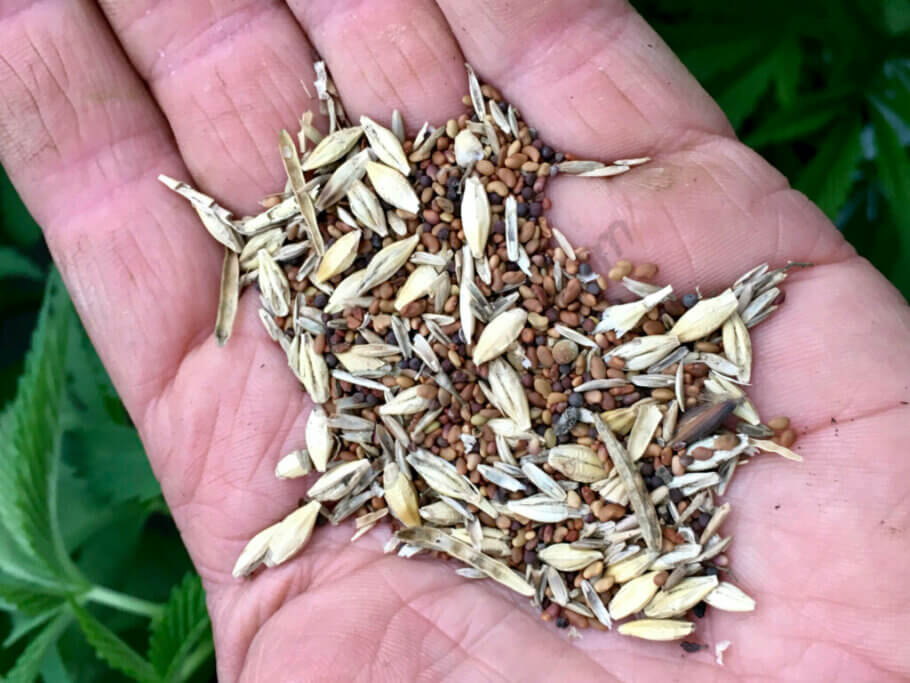

Recomendaciones
- Living soil o suelo vivo
- Cultivo de cobertura, abonos verdes y mulching
- Living soil o suelo vivo -
Como probablemente te hayas dado cuenta estos últimos años, en el mundo del cultivo, el enfoque hacia prácticas más naturales y sostenibles ha estado ganando popularidad gracias a la aplicación de técnicas de cultivo orgánico. Uno de los métodos más fascinantes y efectivos que ha surgido es el cultivo en living soil o suelo vivo, un sistema de cultivo inspirado en los ecosistemas naturales que busca imitar los procesos biológicos que ocurren en la tierra, de manera que se consiguen plantas más saludables y resistentes. En este artículo, te invitamos a profundizar sobre este método de cultivo dando respuesta a preguntas como: ¿qué es el living soil, cómo funciona y por qué está ganando seguidores a pasos agigantados en la comunidad de cultivadores? Descubre con nosotros todos los secretos de esta técnica que tan buen resultado está dando en zonas como California o Colorado.

Living soil o suelo vivo, el secreto de unas plantas sanas
La relación entre un suelo vivo, lleno de vida microbiana, y unas plantas sanas es fundamental para entender los beneficios del cultivo en living soil. En un suelo vivo, la diversidad de microorganismos como bacterias, hongos, protozoos, nematodos, artrópodos y lombrices juega un papel crucial en el ciclo de nutrientes y la salud general del suelo, y por supuesto también de la planta. Estos microorganismos descomponen la materia orgánica, liberando nutrientes en formas asimilables por las plantas. Además, y ese es el motivo por el que muchas veces se utiliza microvida, algunos microorganismos forman simbiosis con las raíces de las plantas, ayudando en la absorción de nutrientes y protegiéndolas contra patógenos como los temibles hongos de las raíces. Una comunidad microbiana diversa y activa contribuye a una estructura del suelo adecuada para el cultivo, mejorando su capacidad de retención de agua y nutrientes, y promoviendo un equilibrio saludable en el ecosistema del suelo, algo muy importante para que las plantas puedan aprovechar los elementos disponibles y mostrar todo su potencial. Como resultado, las plantas cultivadas en living soil o suelo vivo tienden a ser más vigorosas, resistentes a enfermedades y con una mayor calidad de nutrientes, lo que se traduce en cosechas más abundantes y de mejor calidad, además de reducir los riesgos de infecciones por hongos como el fusarium o el pythium.
Ventajas del living soil
• Sostenibilidad ambiental: Al fomentar la biodiversidad del suelo y reducir la necesidad de fertilizantes sintéticos y productos fitosanitarios como insecticidas y fungicidas, el living soil promueve prácticas agrícolas más sostenibles y amigables con el medio ambiente.
• Mejora de la salud del suelo: La presencia de una diversidad de micro y macroorganismos en el suelo ayuda a mantener su salud y fertilidad a largo plazo, lo que resulta en un sustrato más rico en nutrientes y con una mejor estructura, algo que favorece el crecimiento de las plantas.
• Mayor resistencia a enfermedades y plagas: Los microorganismos beneficiosos presentes en el living soil ayudan a proteger las plantas contra enfermedades y plagas al competir con los organismos patógenos y prevenir su proliferación.
• Mejor absorción de nutrientes: Los hongos micorrícicos y otros microorganismos presentes en el suelo forman asociaciones simbióticas con las raíces de las plantas, facilitando la absorción de agua y nutrientes esenciales como el nitrógeno, el fósforo y el potasio.
• Reducción de la necesidad de fertilizantes: Al promover la descomposición de la materia orgánica y la liberación gradual de nutrientes, el living soil reduce la dependencia de abonos minerales, lo que puede resultar en ahorros económicos y en una menor huella ambiental.
• Mejora del sabor y aroma de las plantas: Se cree que un suelo vivo y saludable contribuye a mejorar la calidad organoléptica de las plantas al proporcionar un entorno óptimo para el desarrollo de compuestos aromáticos como los terpenos.
- Cultivo de cobertura, abonos verdes y mulching -
En la naturaleza, es raro encontrar suelo desnudo, expuesto a la intemperie. Excepto por la intervención humana o animal y los cataclismos como deslizamientos o incendios forestales que lo despojan temporalmente, el suelo natural siempre está cubierto de algún tipo de vegetación. Y si somos jardineros que tratan de mantener un huerto limpio, seremos muy consciente de esto, ya que no importa cuánto intentemos mantener alejadas las malas hierbas, ellas siguen regresando para colonizar el suelo desnudo. Esto se debe a que la tierra viva necesita que las plantas crezcan en ella para poder mantenerse con vida, es simplemente la forma en que la naturaleza mantiene la tierra en una salud óptima, ¡y todos podemos aprender un par de cosas de la naturaleza! Las técnicas de jardinería que imitan a la naturaleza de esta manera, como el uso de cultivos de cobertura, el abono verde y el mulching, son pilares fundamentales de la agricultura orgánica sostenible, en particular en los sistemas de cultivo sin labranza (no-till gardening). Dependiendo de cómo se gestionen, los cultivos de cobertura pueden prevenir la erosión del suelo, suprimir las malas hierbas, aumentar la biodiversidad, reducir los requisitos de riego, aportar materia orgánica al suelo y mantener poblaciones microbianas sanas en la zona de las raíces, todo lo cual puede beneficiar enormemente al cultivo
¿Qué son los cultivos de cobertura?
Un cultivo de cobertura se puede definir en términos generales como una planta que no se cultiva para la cosecha, sino que es un mantillo vivo que se cultiva con el propósito expreso de cubrir el suelo, generalmente con el objetivo de inhibir las malezas, mejorar el medio y evitar la erosión del suelo causada por el viento, la lluvia o el riego. Los cultivos de cobertura también sirven para mantener la superficie del sustrato más fresca, lo que reduce la pérdida de humedad por evaporación, lo que a su vez reduce la necesidad de riego. Las raíces de los cultivos de cobertura romperán y airearán el suelo pesado y compactado mientras soportan los microbios beneficiosos necesarios para hacer un sustrato de crecimiento saludable. Aunque mientras crecen sus raíces toman agua del suelo, los cultivos de cobertura en realidad aumentarán la capacidad del suelo para retener agua mediante la adición de materia orgánica y mediante asociaciones en la zona de raíces con hongos micorrízicos. No solo eso, sino que a medida que mueren y se descomponen naturalmente, las raíces dejan "caminos" dentro del sustrato para que las lombrices y las nuevas raíces las aprovechen, mejorando así la salud y la estructura del suelo, aumentando la aireación, el drenaje y el ciclo de nutrientes.
¿Cuáles son los cultivos de cobertura adecuados?
Casi cualquier planta puede servir como cultivo de cobertura, aunque existen ciertas características que hacen que unas especies sean más adecuadas que otras para este fin. El cultivo de cobertura debe ser vigoroso y de rápido crecimiento, produciendo mucha materia foliar y cobertura del suelo, pero sin ser invasivo. Los cultivos de cobertura de gramíneas, como el centeno o la avena, pueden aumentar el contenido de carbono en el suelo, mientras que los cultivos de cobertura de leguminosas, como el trébol, la alfalfa y la arveja, incluso extraerán nitrógeno del aire y lo almacenarán en los nódulos de las raíces, lo que puede fertilizar cultivos posteriores.
• Legumbres: se utilizan principalmente por sus propiedades fijadoras de nitrógeno: trébol carmesí, trébol rojo, trébol blanco, alfalfa, arveja peluda, medicos, guisantes, altramuces, garbanzos, lentejas.
• Pastos o gramíneas - carroñeros de nutrientes, altos en carbono, utilizados principalmente por su mayor biomasa: Centeno, avena, trigo, cebada, rye Grass, mijo, maíz.
• Brassicas - Poseen propiedades biofumigantes, liberando exudados de raíces que suprimen las plagas y patógenos del suelo. Las brasicáceas de raíces grandes como el rábano y el nabo romperán bien la tierra compactada: mostaza, canola, rábano oleaginoso, nabo, col rizada.
• Hojas anchas que no son leguminosas: trigo sarraceno, espinaca, lino, phacelia, dichondra, arcillatonia, pamplina, calabaza, calabacín.